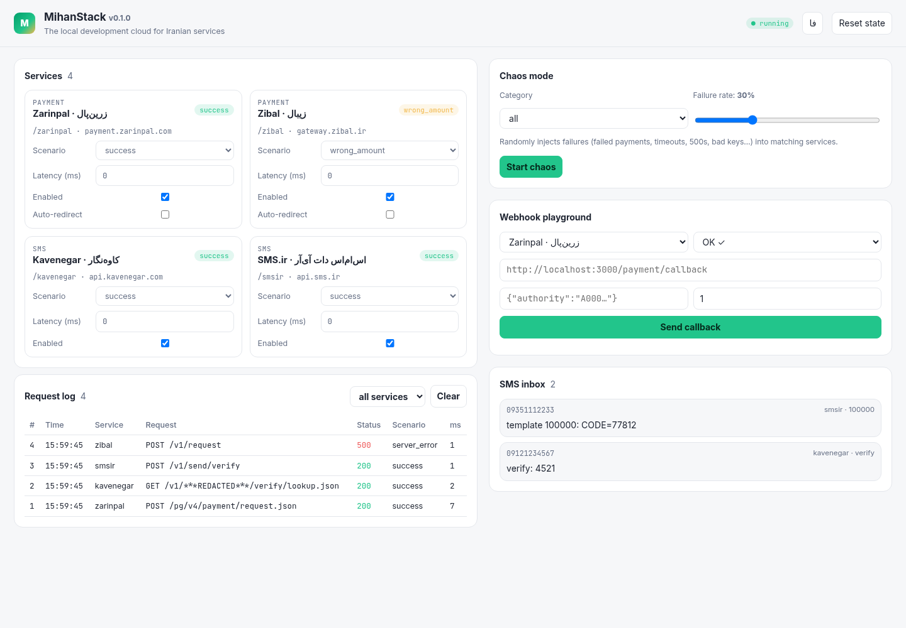

The local development cloud for Iranian services.ابر توسعهٔ محلی برای سرویسهای ایرانی.
Run Zarinpal, Zibal, Kavenegar and SMS.ir on localhost with their real request formats and error codes. Flip a switch to get a declined payment, a duplicate bank callback or a verify with the wrong amount, without a merchant ID, API credit or a flaky sandbox.زرینپال، زیبال، کاوهنگار و SMS.ir را با همان قالب درخواستها و کدهای خطا روی لوکالهاست اجرا کنید. با یک کلید، پرداخت ناموفق، بازگشت تکراری بانک یا تأیید با مبلغ اشتباه بگیرید؛ بدون شناسهٔ پذیرنده، اعتبار پیامک یا سندباکس ناپایدار.
npx github:mrzroot/mihanstack# Pick a service and a scenario, then press Run.
# This is a scripted, in-page replay of real MihanStack responses.
Four services. One port. Swap a base URL.چهار سرویس، یک درگاه، فقط نشانی پایه را عوض کنید.
Point your SDK or HTTP client at MihanStack instead of the real host. Prefixed paths, unambiguous bare paths and the real Host header (via /etc/hosts or a proxy) are all routed to the right emulator.SDK یا کلاینت HTTP خود را به جای میزبان واقعی به میهناستک وصل کنید. مسیرهای پیشونددار، مسیرهای بدون ابهام و هدر Host واقعی (با /etc/hosts یا پراکسی) همه به شبیهساز درست میرسند.
Zarinpalزرینپال
request, StartPay, verify and inquiry with the {data, errors} envelope and codes 100, 101, -9…-54.request، StartPay، verify و inquiry با پوشش {data, errors} و کدهای ۱۰۰، ۱۰۱ و ۹- تا ۵۴-.
Zibalزیبال
request, start, verify and inquiry with result codes 100, 102, 103, 105, 201, 202… and a real-shaped callback.request، start، verify و inquiry با کدهای ۱۰۰، ۱۰۲، ۱۰۳، ۱۰۵، ۲۰۱، ۲۰۲ و بازگشتی با همان شکل واقعی.
Kavenegarکاوهنگار
send, verify/lookup with %token% templates, status and account info; HTTP status mirrors return.status.send، verify/lookup با قالبهای %token%، وضعیت و اطلاعات حساب؛ کد HTTP همان return.status است.
SMS.ir
bulk, likeToLike, verify, credit and lines behind an X-API-KEY header, with {status, message, data}.bulk، likeToLike، verify، اعتبار و خطوط با هدر X-API-KEY و پاسخ {status, message, data}.

The built-in dashboard at localhost:8585: scenario switches, live redacted request log, chaos, webhooks and the SMS inbox. Fully offline, English and Persian.داشبورد داخلی در localhost:8585: کلید سناریوها، لاگ زندهٔ درخواستها با حذف اطلاعات حساس، آشوب، وبهوک و صندوق پیامک. کاملاً آفلاین، فارسی و انگلیسی.
Reproduce the bugs production will give you.باگهایی را که محیط واقعی به شما میدهد، از قبل بسازید.
Set a scenario per service in mihanstack.yml, from the dashboard, with --scenario svc=name, through the admin API, or per request with the X-Mihan-Scenario header.سناریو را برای هر سرویس در mihanstack.yml، از داشبورد، با --scenario svc=name، از API مدیریت یا برای هر درخواست با هدر X-Mihan-Scenario تعیین کنید.
successNormal flow; SMS lands in the inbox.روند عادی؛ پیامک در صندوق ذخیره میشود.
failedUser cancels or bank declines (Status=NOK); SMS: insufficient credit.کاربر لغو میکند یا بانک رد میکند (Status=NOK)؛ پیامک: اعتبار ناکافی.
duplicate_callbackYour callback is hit twice: redirect plus a server-side resend.آدرس بازگشت شما دو بار فراخوانی میشود: هدایت مرورگر و ارسال دوباره از سرور.
wrong_amountZarinpal verify returns -50; Zibal returns a different amount.تأیید زرینپال ۵۰- برمیگرداند؛ زیبال مبلغ متفاوتی میدهد.
invalid_signatureInvalid merchant/terminal (-10 / 102) or API key (403 / 10).پذیرنده یا ترمینال نامعتبر (۱۰- / ۱۰۲) یا کلید API نامعتبر (۴۰۳ / ۱۰).
merchant_disabledTerminal inactive (-11 / 103) or account disabled (401 / 13).ترمینال غیرفعال (۱۱- / ۱۰۳) یا حساب غیرفعال (۴۰۱ / ۱۳).
timeoutConnection held for timeoutMs, then dropped.اتصال به اندازهٔ timeoutMs نگه داشته و بعد قطع میشود.
network_errorTCP connection reset.اتصال TCP بازنشانی میشود.
server_errorHTTP 500 with an HTML error page.HTTP 500 با صفحهٔ خطای HTML.
latencyAdds slowMs (3 s by default) to every response.به هر پاسخ slowMs (پیشفرض ۳ ثانیه) اضافه میکند.
Chaos, webhooks, record & replay.آشوب، وبهوک، ضبط و پخش.
The parts that usually only break in production, made reproducible on your laptop and in CI.بخشهایی که معمولاً فقط در محیط واقعی خراب میشوند، حالا روی لپتاپ و در CI قابلتکرارند.
Chaos modeحالت آشوب
Random timeouts, resets, 500s and latency for all, payment, sms, network or one service, at a set rate and with a seed so failures repeat exactly.مهلت تمامشده، قطع اتصال، خطای ۵۰۰ و تأخیر تصادفی برای همه، پرداخت، پیامک، شبکه یا یک سرویس، با نرخ مشخص و بذر ثابت تا خطاها دقیقاً تکرار شوند.
Webhook playgroundزمین بازی وبهوک
Fire a realistic provider callback at your app, repeat it, and see each status and timing. Proof that your duplicate-payment guard works.یک بازگشت واقعینما به برنامهتان بفرستید، تکرارش کنید و کد وضعیت و زمان هرکدام را ببینید؛ اثبات اینکه محافظ پرداخت تکراری کار میکند.
Record & replayضبط و پخش
Record real sandbox traffic once with merchant IDs, API keys, card numbers and mobiles redacted, then replay it offline; --strict 404s anything unrecorded.ترافیک سندباکس واقعی را یک بار با حذف شناسهٔ پذیرنده، کلید API، شمارهٔ کارت و موبایل ضبط کنید و بعد آفلاین پخش کنید؛ --strict برای هر چیز ضبطنشده ۴۰۴ میدهد.
Up in one command.با یک دستور بالا بیاورید.
Not on npm or Docker Hub yet: npx builds it straight from GitHub (npm 10+), or build the image from the repo.هنوز در npm یا Docker Hub نیست: npx آن را مستقیم از گیتهاب میسازد (npm 10 به بالا)، یا ایمیج را از مخزن بسازید.
# start on http://localhost:8585 (dashboard + all emulators) npx github:mrzroot/mihanstack # 1. create a Zarinpal payment curl -s localhost:8585/zarinpal/pg/v4/payment/request.json \ -H 'content-type: application/json' \ -d '{"merchant_id":"1344b5d4-0048-11e8-94db-005056a205be", "amount":10000,"callback_url":"http://localhost:3000/verify", "description":"order 42"}' # → {"data":{"code":100,"authority":"A0f3…"},"errors":[]} # 2. open the fake bank page and pay open http://localhost:8585/zarinpal/pg/StartPay/A0f3… # read an OTP back in an e2e test curl -s "localhost:8585/_mihan/sms?receptor=09121234567&last=1"
# build from the repository (not on Docker Hub yet) docker build -t mihanstack https://github.com/mrzroot/mihanstack.git docker run --rm -p 8585:8585 mihanstack # optional: mount a config at /app/mihanstack.yml docker run --rm -p 8585:8585 -v "$PWD/mihanstack.yml:/app/mihanstack.yml" mihanstack # or pass flags (keep --host 0.0.0.0 so the port is reachable) docker run --rm -p 8585:8585 mihanstack \ start --host 0.0.0.0 --port 8585 --scenario zarinpal=duplicate_callback
# .github/workflows/test.yml - uses: mrzroot/mihanstack@v0.1.1 id: mihan with: scenarios: | zarinpal=success kavenegar=failed - run: npm test env: ZARINPAL_BASE_URL: ${{ steps.mihan.outputs.url }}/zarinpal # MIHANSTACK_URL is exported to later steps too
// plugins/idpay.mjs → plugins: [./plugins/idpay.mjs] import { defineProvider } from "mihanstack"; export default defineProvider({ name: "idpay", category: "payment", scenarios: ["success", "failed"], endpoints: [{ method: "POST", path: "/v1.1/payment", handler: (ctx) => ctx.scenario === "failed" ? { status: 406, body: { error_code: 32 } } : { status: 201, body: { id: ctx.randomId(12) } }, }], }); // timeouts, resets, 500s and latency come for free
Test the unhappy paths.مسیرهای ناخوشایند را بیازمایید.
- No credentials in CIبدون اطلاعات محرمانه در CIAny merchant ID and API key work by default; restrict them in config when you want to test auth errors.هر شناسهٔ پذیرنده و کلید API بهطور پیشفرض پذیرفته میشود؛ برای آزمودن خطای احراز هویت، در پیکربندی محدودشان کنید.
- Admin API for testsAPI مدیریت برای آزمونها/_mihan/services, /_mihan/sms, /_mihan/transactions, /_mihan/chaos and /_mihan/reset make every scenario scriptable.مسیرهای /_mihan/services، /_mihan/sms، /_mihan/transactions، /_mihan/chaos و /_mihan/reset همهٔ سناریوها را قابلاسکریپت میکنند.
- Persian-first payment pagesصفحهٔ پرداخت فارسیThe fake bank pages are RTL and look like the real flow, with pay and cancel buttons; autoRedirect skips the click in CI.صفحههای بانک ساختگی راستبهچپ و شبیه روند واقعیاند، با دکمهٔ پرداخت و انصراف؛ autoRedirect در CI کلیک را حذف میکند.
- ExtensibleقابلگسترشAdd IDPay, NextPay or your own SMS gateway with defineProvider: handlers get ctx.req, ctx.scenario, persistent ctx.state, ctx.sms() and ctx.fireCallback().با defineProvider درگاه IDPay، NextPay یا سرویس پیامک خودتان را اضافه کنید: handlerها به ctx.req، ctx.scenario، ctx.state ماندگار، ctx.sms() و ctx.fireCallback() دسترسی دارند.
Questionsپرسشها
Is this affiliated with Zarinpal, Zibal, Kavenegar or SMS.ir?آیا این پروژه وابسته به زرینپال، زیبال، کاوهنگار یا SMS.ir است؟
No. MihanStack is an independent open-source emulator. Formats follow the providers' public documentation; rarely documented error codes are marked approximate in the source.خیر. میهناستک یک شبیهساز متنباز مستقل است. قالبها از مستندات عمومی سرویسها پیروی میکنند و کدهای خطای کممستند در سورس «تقریبی» علامت خوردهاند.
How close is it to the real APIs?چقدر به APIهای واقعی نزدیک است؟
Endpoints, envelopes, status codes and callback parameters match the public docs, but it hasn't been compared byte-for-byte with live production responses. Use record mode against a real sandbox to capture exact responses, and open an issue if you find a mismatch.مسیرها، ساختار پاسخ، کدهای وضعیت و پارامترهای بازگشت با مستندات عمومی یکساناند، اما بایتبهبایت با پاسخهای محیط واقعی مقایسه نشدهاند. با حالت ضبط روی سندباکس واقعی پاسخ دقیق را بگیرید و اگر تفاوتی دیدید، issue باز کنید.
Why isn't it on npm or Docker Hub?چرا در npm یا Docker Hub نیست؟
Not yet published. npx github:mrzroot/mihanstack builds it on install (use npm 10 or newer; older npm versions have a bug with git dependencies), and the Dockerfile builds a small node:20-alpine image.هنوز منتشر نشده است. دستور npx github:mrzroot/mihanstack هنگام نصب آن را میسازد (npm 10 یا جدیدتر؛ نسخههای قدیمیتر با وابستگیهای گیت مشکل دارند) و Dockerfile یک ایمیج کوچک node:20-alpine میسازد.
Can I use it in production?میتوانم در محیط واقعی استفاده کنم؟
No: it's a development and testing tool. It never moves real money or sends real SMS; payments are always simulated and messages go to a local inbox.خیر؛ ابزار توسعه و آزمون است. هیچ پول واقعی جابهجا نمیکند و پیامک واقعی نمیفرستد؛ پرداختها شبیهسازی میشوند و پیامها به صندوق محلی میروند.
Does this page load in Iran?این صفحه در ایران باز میشود؟
It makes no third-party requests: no CDN, no web-font service, no analytics. The Persian font is self-hosted on GitHub Pages.هیچ درخواستی به سرویس دیگری نمیفرستد: نه CDN، نه سرویس فونت، نه آمارگیر. فونت فارسی روی همین GitHub Pages است.